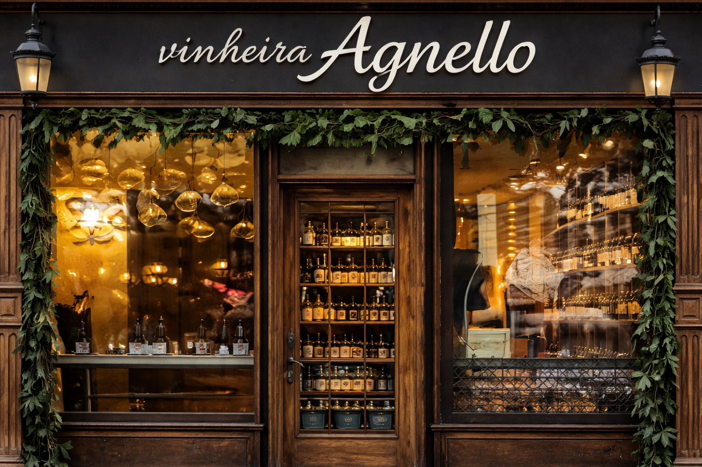

Nossa História
A Vinheira Agnello nasceu há 15 anos em uma pequena rua charmosa, a partir da paixão por vinhos. Começou simples, com poucos rótulos e um atendimento próximo e acolhedor. Com o tempo, cresceu, trazendo vinhos do mundo todo e criando experiências únicas. Hoje, é referência para quem busca bons vinhos e bons momentos. 🍷

Atendimento Especializado
Nosso diferencial é o preparo dos nossos vendedores para orientar cada cliente e também temos os melhores vinhos disponiveis no mercado, para uma melhor experiência.